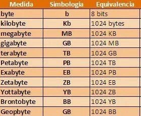
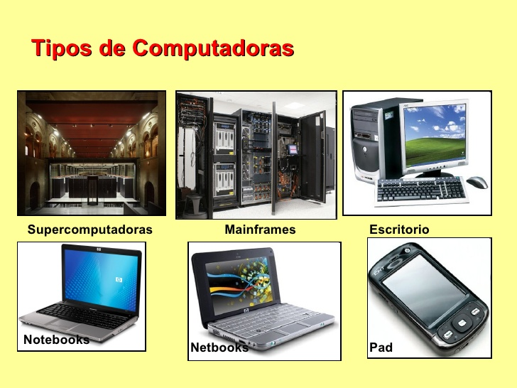

Inicio
INTRODUCCIÓN A LAS COMPUTADORAS
La introducción a las computadoras es un tema fundamental que abarca los conceptos básicos sobre qué es una computadora, sus componentes principales y cómo funcionan.
Una computadora es un sistema compuesto por diferentes elementos físicos llamados HARDWARE que se relacionan a través de instrucciones por medio del SOWFTWARE.
A continuación, se darán a conocer más a fondo los componenetes de las computadora y el funcionamiento de la misma.
HARDWARE
El hardware, en el contexto de las computadoras y la tecnología, se refiere a todos los componentes físicos tangibles de un sistema informático. Estos componentes son los elementos físicos que puedes ver y tocar. Se compone de:
CPU (Unidad Central de Procesamiento): Es el cerebro de la computadora. Se encarga de ejecutar instrucciones y realizar cálculos. La velocidad y la capacidad de la CPU influyen en el rendimiento general de la computadora.
Memoria RAM (Memoria de Acceso Aleatorio): Es donde se almacenan temporalmente los datos y programas que la CPU necesita para acceder rápidamente. Cuanta más memoria RAM tenga una computadora, más rápido podrá ejecutar múltiples programas simultáneamente.
Disco Duro (HDD) / Unidad de Estado Sólido (SSD): Es donde se almacenan permanentemente los datos en la computadora. El disco duro utiliza discos magnéticos para almacenar datos, mientras que las unidades de estado sólido utilizan memoria flash. Los SSD son más rápidos y más duraderos que los HDD, pero también son más costosos por gigabyte.
Tarjeta Madre (Placa Base): Es el componente principal de la computadora que conecta todos los demás componentes entre sí. Contiene el chipset, los puertos de conexión, las ranuras de expansión y otros circuitos esenciales para el funcionamiento del sistema.
Tarjeta Gráfica (GPU): Se encarga de procesar los gráficos y la salida de video de la computadora. Para tareas intensivas en gráficos como juegos y diseño 3D, se utilizan tarjetas gráficas dedicadas. Muchas CPUs modernas también incluyen gráficos integrados.
Dispositivos de Entrada/Salida (E/S): Incluyen teclados, ratones, monitores, impresoras, escáneres, cámaras web, unidades ópticas (como unidades de CD/DVD/Blu-ray), puertos USB, HDMI, Ethernet, entre otros. Estos dispositivos permiten la interacción entre el usuario y la computadora, así como la conexión con dispositivos externos.
Fuente de Alimentación: Suministra energía eléctrica a todos los componentes de la computadora. La potencia y la eficiencia de la fuente de alimentación son importantes para garantizar un funcionamiento estable y confiable del sistema.

SOFTWARE
El software es el conjunto de programas, instrucciones y datos que dirigen el funcionamiento de una computadora. A diferencia del hardware, que son los componentes físicos tangibles, el software es intangible y consiste en instrucciones lógicas que permiten a la computadora realizar diversas tareas y operaciones. Se compone de:
Sistema Operativo (SO): Es el software fundamental que gestiona los recursos de hardware y proporciona servicios básicos para los programas de aplicación. Controla el funcionamiento de la computadora y facilita la interacción entre el hardware y el software. Algunos ejemplos de sistemas operativos populares son Windows, macOS, Linux, Android, iOS, entre otros.
Software de Aplicación: Son programas diseñados para realizar tareas específicas o resolver problemas particulares. Incluyen una amplia variedad de programas utilizados para propósitos diversos, como procesadores de texto, hojas de cálculo, programas de diseño gráfico, navegadores web, reproductores multimedia, software de edición de imágenes y video, software de gestión de proyectos, entre otros.
Software de Desarrollo (Entornos de Desarrollo Integrado - IDEs): Son herramientas utilizadas por los programadores para crear, depurar y mantener software. Incluyen editores de código, compiladores, depuradores y otras utilidades que facilitan el desarrollo de aplicaciones. Ejemplos de IDEs populares son Visual Studio, IntelliJ IDEA, Eclipse, PyCharm, entre otros.
Software de Seguridad: Son programas diseñados para proteger la computadora y la información contra amenazas como virus, malware, spyware, ransomware, entre otros. Incluyen antivirus, firewalls, programas de detección de intrusiones, entre otros.
Software de Utilidad: Son programas que realizan tareas específicas para mejorar el rendimiento, la seguridad o la administración del sistema. Incluyen utilidades de limpieza de disco, herramientas de copia de seguridad, programas de compresión de archivos, herramientas de diagnóstico de hardware, entre otros.
Software de Gestión de Base de Datos: Son sistemas diseñados para almacenar, recuperar, actualizar y administrar grandes volúmenes de datos de manera eficiente. Incluyen sistemas de gestión de bases de datos relacionales (RDBMS) como MySQL, PostgreSQL, Oracle, Microsoft SQL Server, así como sistemas de gestión de bases de datos NoSQL como MongoDB, Cassandra, Redis, entre otros.
Software de Navegación y Comunicación: Son programas diseñados para acceder y utilizar servicios en línea, como navegadores web, clientes de correo electrónico, aplicaciones de mensajería instantánea, redes sociales, entre otros
Entre los más comunes se encuentran: SISTEMA OPERATIVO, APLICACIONES y PROGRAMACIÓN.
UNIDADES DE MEDIDA
La unidad básica de información es el bit, que puede tener un valor de 0 o 1. Ocho bits forman un byte, que es suficiente para almacenar un solo carácter de texto.
Las unidades de medida que existen son: KILOBYTES (KB), MEDABYTES (MB), GIGABYTES (GB) y TERABYTES (TB).

CLASIFICACIÓN DE LAS COMPUTADORAS
Las computadoras de dividen en: SUPERCOMPUTADORAS, MACROCOMPUTADORAS, MINICOMPUTADORAS y MICROCOMPUTADORAS.

AWS
Amazon Web Service es una plataforma de servicios en la nube ofrecida por Amazon.com que proporciona una amplia gama de servicios de computación en la nube, incluyendo almacenamiento, bases de datos, análisis, inteligencia artificial, aprendizaje automático, Internet de las cosas (IoT), seguridad, redes, desarrollo de aplicaciones, implementación y administración de aplicaciones, entre otros.

MICROSOFT AZURE
Es una plataforma de servicios en la nube ofrecida por Microsoft que proporciona una amplia gama de servicios de computación en la nube, incluyendo almacenamiento, bases de datos, análisis, inteligencia artificial, aprendizaje automático, Internet de las cosas (IoT), seguridad, redes, desarrollo de aplicaciones, implementación y administración de aplicaciones, entre otros. Los servicios que ofrece son los siguientes:
Azure Virtual Machines: Permite a los usuarios ejecutar máquinas virtuales en la nube para ejecutar aplicaciones y workloads computacionales.
Azure Blob Storage: Es un servicio de almacenamiento en la nube altamente escalable y duradero que permite a los usuarios almacenar y recuperar datos desde cualquier lugar de la web.
Azure SQL Database: Proporciona bases de datos relacionales gestionadas en la nube, así como soluciones de bases de datos NoSQL como Cosmos DB.
Azure Functions: Es un servicio de computación sin servidor que permite ejecutar código en respuesta a eventos sin tener que gestionar la infraestructura subyacente.
Azure Machine Learning: Proporciona herramientas y servicios para desarrollar, entrenar y desplegar modelos de aprendizaje automático.
Azure Kubernetes Service (AKS): Es un servicio de orquestación de contenedores totalmente administrado basado en Kubernetes, que permite implementar y administrar aplicaciones contenerizadas en la nube.
Azure Active Directory (AD): Proporciona servicios de autenticación y gestión de identidades en la nube para permitir el acceso seguro a aplicaciones y recursos en Azure y en otras plataformas.